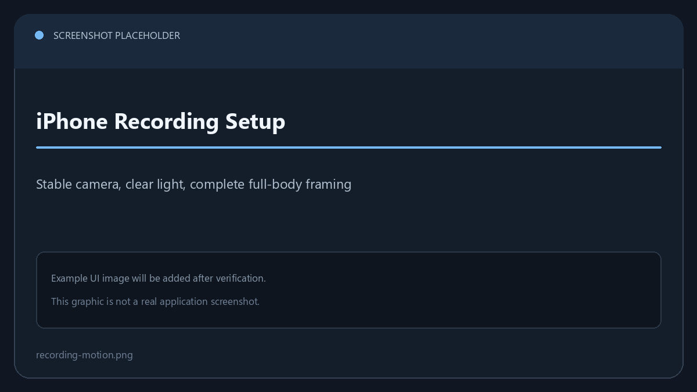
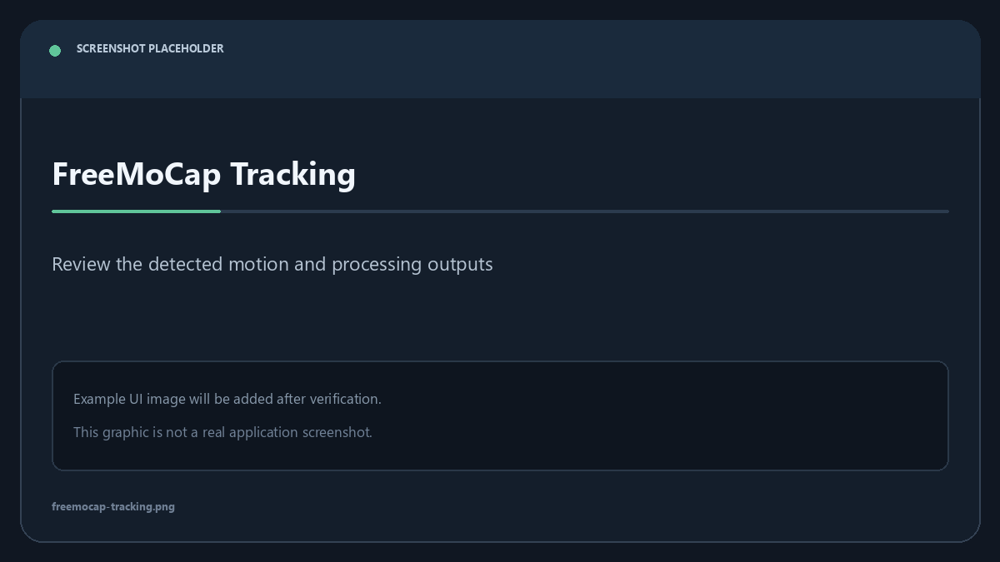

Results & Examples
A visual map of the files and checks you may encounter from the original phone video through a retargeted Blender character.
These are clearly labeled image placeholders—not real recordings or software screenshots. Actual interfaces, output formats, and filenames depend on your FreeMoCap, Blender, and retargeting-tool versions. Replace these cards with verified examples when available.
Raw iPhone Video
Keep an untouched copy of the source recording. Review the full body framing, lighting, focus, and frame rate before deciding whether a compatible copy is needed.

See recording motion for capture guidance and common recording mistakes for quality checks.
FreeMoCap Tracking
After importing and processing, inspect the tracked motion before moving on. Check for missing limbs, jitter, identity swaps, and other visible tracking issues.

Read FreeMoCap processing for import, output, and review steps.
Blender Skeleton
Depending on your detector, exporter, and version, the result may be a Blender scene or an exchange file for an appropriate importer. Verify the actual output instead of expecting a particular filename or format.

Use the Blender export guide to inspect supported output for your installation.
Retargeted Character
Retargeting maps motion from a source skeleton to a compatible character rig. Inspect bone mapping, rest pose, scale, axes, and deformation before treating a preview as final.

Follow Mixamo retargeting and save a separate copy of the scene before making destructive changes.
Final Animation
Play the complete timeline and review contact points, balance, clipping, and transitions. Export only after the scene behaves as expected in your target application.

No outcome is guaranteed by these examples. Capture quality, software versions, hardware, detector support, and rig compatibility all affect the result.
Next step
Continue with retargeting, or see common mistakes before recording another take.